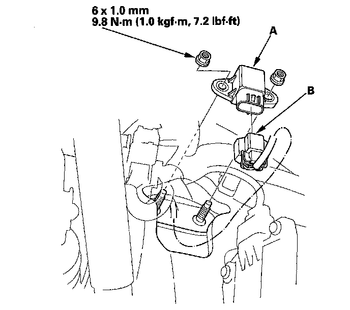
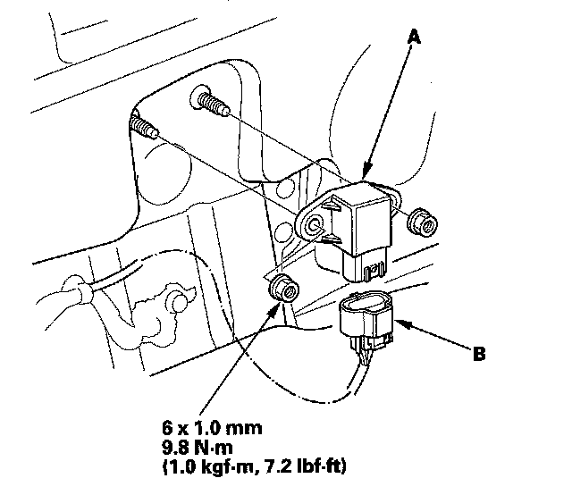

Acceleration Sensor: Service and Repair
Vertical Acceleration Sensor ReplacementNOTE: This vehicle has one front vertical acceleration sensor, and two rear vertical acceleration sensors on both right and left sides.
Front
1. Turn the ignition switch OFF.
2. Remove the driver's dashboard undercover.
3. Remove the TPMS control unit.
4. Remove the sensor mounting nuts, and move the vertical acceleration sensor (A).

5. Disconnect the vertical acceleration sensor connector (B).
6. Install the vertical acceleration sensor in the reverse order of removal.
7. Test-drive the vehicle, and check that the active damper system indicator does not come on.
Rear
1. Turn the ignition switch OFF.
2. Remove the appropriate side of the rear side trim panel.
3. Remove the sensor mounting nuts, and move the vertical acceleration sensor (A).
NOTE: The illustration shows the left side of the vehicle, the right side is similar.

4. Disconnect the vertical acceleration sensor connector (B).
5. Install the vertical acceleration sensor in the reverse order of removal.
6. Test-drive the vehicle, and check that the active damper system indicator does not come on.